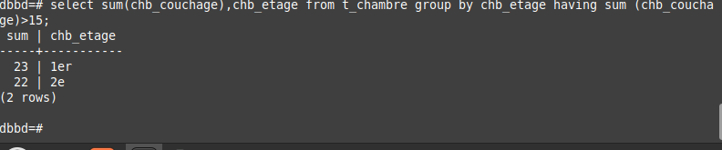

1. Compter le nombre de chambres total.
SELECT COUNT (chb_numero) FROM t_chambre;
SELECT COUNT (chb_numero) FROM t_chambre;
SELECT MAX (trf_chb_prix) FROM tj_trf_chb;
SELECT SUM (chb_couchage) FROM t_chambre;
SELECT AVG (trf_chb_prix) FROM tj_trf_chb;
SELECT COUNT (cli_nom) FROM t_client WHERE cli_enseigne IS NOT NULL;
⚠ Pas de jointure ⚠
SELECT AVG (trf_chb_prix) FROM tj_trf_chb WHERE trf_date_debut>TO_DATE ('20000115','YYYYMMDD') AND trf_date_debut
SELECT tit_code,COUNT (tit_code) FROM t_client GROUP BY tit_code;
SELECT COUNT(chb_etage),chb_etage FROM t_chambre GROUP BY chb_etage;
SELECT SUM (chb_couchage),chb_etage FROM t_chambre GROUP BY chb_etage;
SELECT SUM (chb_couchage),chb_etage FROM t_chambre GROUP BY chb_etage HAVING SUM (chb_couchage)>15;
